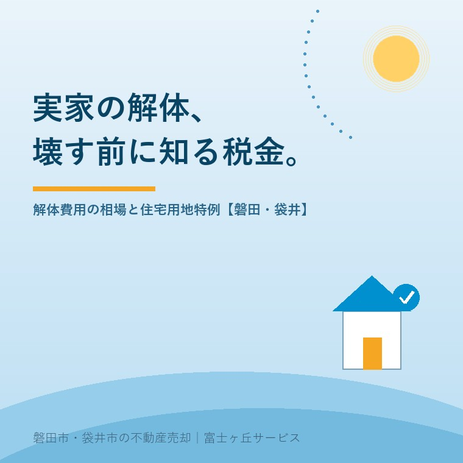

2026年7月29日｜カテゴリ：解体・税金・実家じまい

この記事の要点
Q. 誰も住まない実家、壊して更地にしたほうがいい？費用はどれくらい？
A. 木造30坪でおおむね90〜180万円が目安ですが、処分費や人件費の高騰で、2026年現在はこれを超えるケースも増えています。しかも建物を壊すと土地の固定資産税の軽減（住宅用地特例）が外れて税負担が上がるため、「とりあえず壊す」は損になりがちです。壊すかどうかは、売却や活用の出口とセットで決めるのが鉄則です。磐田市・袋井市・森町では、介護施設の運営から不動産事業を始めた富士ヶ丘サービスのような「介護×不動産」専門の会社に、壊す前の段階から相談するという選択肢があります。
「古い家だから、まず更地にしてから考えようと思って」──実家じまいのご相談で、実はいちばんヒヤッとする一言です。お気持ちはよく分かるのですが、解体には「費用の高騰」と「壊した後の税金」という2つの落とし穴があり、順番を間違えると数十万〜数百万円単位で損をすることがあります。今日は、解体を考え始めた方に知っておいてほしい相場・税金・補助金・判断の順番を、まとめて整理します。
解体費用は建物の構造と大きさでおおよそ決まります。
| 構造 | 坪単価の目安 | 30坪の場合 |
|---|---|---|
| 木造 | 3〜6万円／坪 | 約90〜180万円 |
| 鉄骨造 | 5〜7万円／坪 | 約150〜210万円 |
| RC造 | 6〜8万円／坪 | 約180〜240万円 |
ただしこれはあくまで「本体」の目安です。ここ数年、廃棄物の処分費と人件費の上昇で解体費は全国的に高騰しており、木造の戸建てでも総額300万円を超える事例が出ています。さらに磐田市・袋井市の実家で見落とされがちなのが付帯物です。蔵・物置・農機具小屋・カーポート・庭石・庭木・浄化槽・井戸──敷地の広いお宅ほど、本体以外の撤去費が積み上がります。また、古い建物は解体前にアスベスト（石綿）の事前調査が法律で義務付けられており、含有が見つかれば費用はさらに上がります。見積もりは必ず現地を見てもらい、複数社から。石綿の事前調査は石綿障害予防規則第3条の義務で、2026年1月1日以降着工の工事からは工作物の調査にも資格者が必要になります。見積書のどの行に費用が乗るかは空き家の解体とアスベスト費用──2026年1月に対象拡大に整理しました。これは遺品整理と同じ鉄則です。
解体でもっと大きいのが、実は税金の話です。住宅が建っている土地は「住宅用地特例」で固定資産税の課税標準が大幅に軽減されています（200㎡までの部分は6分の1、それを超える部分は3分の1）。建物を壊して更地にすると、この軽減が外れ、土地の固定資産税はおおむね3〜4倍になります。
タイミングにも注意が必要です。固定資産税は毎年1月1日時点の状況で課税されます。つまり年内に壊せば翌年から更地としての課税になり、年明けに壊せば丸1年の猶予ができる──解体の時期を数週間ずらすだけで、税負担が1年分変わることがあるのです。なお、前回の記事で解説したとおり、壊さず放置して「管理不全空家」の勧告を受けても同じく特例は解除されます。「壊しても上がる、荒れても上がる」──だからこそ、家が使える状態のうちに出口を決めることが大切です。
結論から言うと、売却の当てがないまま先に壊すのはおすすめしません。判断材料を並べます。
| 古家付きのまま売る | 解体して更地で売る | |
|---|---|---|
| 費用 | 解体費の持ち出しなし（価格交渉で調整） | 解体費を先払い（回収できるとは限らない） |
| 税金 | 売れるまで住宅用地特例が続く | 売れるまで固定資産税3〜4倍 |
| 買い手 | リフォーム前提・磐田市の中古住宅補助金を使う層も | 新築用地を探す層に売りやすい |
| 税の特例 | ─ | 相続空き家の3,000万円特別控除は「耐震改修または取壊し」が要件。取壊し売却はこの特例と好相性（2024年からは買主側の取壊しも対象） |
つまり、「更地のほうが売りやすい立地なのか」「買主は誰になりそうか」「3,000万円控除を使うのか」で正解が変わります。解体すべきかどうかは、売却戦略の一部として不動産会社と一緒に決める──この順番なら、解体費の先払いも税負担も最小で済みます。
磐田市には危険空き家の解体費用の助成があります（2026年7月29日時点）。対象は、市の現地調査で特定空家または危険空き家（1981年5月31日以前建築の住宅）と判定された建物で、平成27年5月26日より前から使われていないことなどが要件。助成額は対象工事費の2分の1以内・上限50万円で、市税の完納や権利者全員の同意も必要です。適用できるかは市の判定によるため、壊す前に建築住宅課（TEL 0538-37-4851）への相談から始めてください。袋井市をはじめ他市にも同種の制度がありますが、要件・金額は市ごとに異なります。
ここでも順番が大事です。助成は「危険と判定されるほど傷んだ家」が対象なので、まだ使える家なら売却や活用が先。逆に、すでに傷みが激しいなら、助成を使って早めに壊すほうが、近隣への迷惑や賠償リスクを抱え続けるより合理的です。
富士ヶ丘サービスは、磐田市・袋井市に特化した地域密着の会社として、「高く売る」だけでなく「解体費と税金を引いた後、手元にきちんと残るしまい方」を大切にしています。解体を考え始めたら、見積もりを取る前に一度ご相談ください。実家じまい相談室もあわせてご利用いただけます。
ふじがおか実家カルテ｜「壊すか・そのまま売るか」の判断材料に
建築年・敷地・立地・売りやすさ。壊す前に、まず1冊に。
登記情報と固定資産税通知書から、建物の状況・名義・道路・農地を宅建士が机上で確認し、古家付き売却と更地売却の見通しを整理してお渡しします。
本記事は2026年7月29日時点の情報をもとに作成しています。解体費用は建物・敷地の状況により大きく変わります。固定資産税の具体的な税額は市の資産税担当へ、3,000万円特別控除など税の特例は税理士・税務署へ、助成制度の適用可否は磐田市建築住宅課へご確認ください。

この記事を書いた人：大石浩之（宅地建物取引士）
磐田市・袋井市・森町で「介護×相続×空き家」に特化した不動産売却支援を行う富士ヶ丘サービスの代表取締役・宅地建物取引士。介護施設の運営から不動産事業を始めた経験をもとに、売主とご家族が困らない売却を一件ずつお手伝いしています。プロフィール
磐田市・袋井市・森町の実家じまい・相続空き家相談
固定資産税通知書だけでも相談できます
住所があいまいでも、通知書や写真から名義・道路・農地・残置物の確認順を整理します。カルテ申込またはLINEで状況を送ってください。
富士ヶ丘サービス株式会社／静岡県磐田市見付5789番地1／TEL:0538-31-3308／静岡県知事 (2) 第14083号／代表取締役・宅地建物取引士 大石 浩之